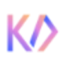

T
Tune StudioРазработка
Сравнивать «Tune Studio» с другими инструментами раздела «Разработка» удобнее на одинаковом исходном материале.
Раздел «Разработка»: варианты ИИ для этой задачи, описания возможностей и переходы к обзорам. Сравните несколько решений на одинаковом примере.
Опишите небольшое приложение таймера и поведение его кнопок, чтобы получить основу реализации. Молекула помогает написать код по описанию; работу экрана, сохранение состояния и установку готового приложения проверяйте отдельно в своей среде разработки.
Подготовь основу приложения таймера для занятий. Нужны начало, пауза и сброс, сохранение заданной длительности. Объясни разделение логики и интерфейса, перечисли случаи для самостоятельной проверки.
Сравнивать «Tune Studio» с другими инструментами раздела «Разработка» удобнее на одинаковом исходном материале.
Для «Visary AI» сначала определите свою задачу и требуемый результат. Карточка относится к направлению «Разработка».
«WizModel» представлен в разделе «Разработка». При выборе проверьте нужную операцию и условия работы с результатом.
«Alfred AI» представлен в разделе «Продуктивность». При выборе проверьте нужную операцию и условия работы с результатом.
Сравнивать «Annotab Studio» с другими инструментами раздела «Разработка» удобнее на одинаковом исходном материале.
«buhAI» готовит визуальные материалы по заданию. «buhAI» также помогает готовить изменения программного кода.
Buildt помогает искать сведения в программном коде с использованием ИИ. Поиск учитывает контекст, а анализ может выполняться на уровне отдельных строк в поддерживаемых языках. Для работы используются собственные синтетические наборы данных: инструмент соединяет поиск по проекту с детальным рассмотрением его фрагментов.
Для «Element-lab.ru» сначала определите свою задачу и требуемый результат. Карточка относится к направлению «Бизнес».
Для «fast AI» сначала определите свою задачу и требуемый результат. Карточка относится к направлению «Образование».
Fronty преобразует изображение интерфейса в код HTML и CSS с участием ИИ. Продукт также предоставляет редактор для создания сайта без программирования. Пользователь может изменять полученную страницу и подключать собственный домен, продолжая работу над оформлением и размещением подготовленного веб-проекта.
Для «Gradio» сначала определите свою задачу и требуемый результат. Карточка относится к направлению «Разработка».
Для «Hackerman AI» сначала определите свою задачу и требуемый результат. Карточка относится к направлению «Разработка».
Сравнивать «How2» с другими инструментами раздела «Разработка» удобнее на одинаковом исходном материале.
Сравнивать «Imagica» с другими инструментами раздела «Продуктивность» удобнее на одинаковом исходном материале.

Inworld AI помогает разработчикам создавать ИИ-персонажей для приложений, игр и виртуальных пространств. Настройка охватывает знания, память и поведение в повествовании, а также разные формы взаимодействия. Инструменты предназначены для встраивания персонажа в проект, где его ответы должны учитывать заданный характер и контекст.
Сравнивать «JAICF» с другими инструментами раздела «Разработка» удобнее на одинаковом исходном материале.
«Kirin» представлен в разделе «Разработка». При выборе проверьте нужную операцию и условия работы с результатом.
«Lazy AI» помогает собрать сайт или веб-приложение.
«Onelook» представлен в разделе «Разработка». При выборе проверьте нужную операцию и условия работы с результатом.
«Open Interpreter» представлен в разделе «Разработка». При выборе проверьте нужную операцию и условия работы с результатом.
«Pandalyst» помогает подготовить запрос к базе данных.
Сравнивать «Quest AI» с другими инструментами раздела «Разработка» удобнее на одинаковом исходном материале.
Roboflow предоставляет средства для разработки решений компьютерного зрения и машинного обучения. Основой обучения служит работа с изображениями-примерами, на которых обучается модель. Платформа предназначена для подготовки подобных задач и обучения по визуальным данным; заявленные сроки и достаточный объём выборки нельзя считать универсальными для любого проекта.
Roost AI помогает превращать пользовательские истории в сценарии сквозной проверки и готовить тесты с использованием ИИ. В описании также отмечены подключения к облачным средам. Для одной функции сопоставьте требования и проверки: важны не только успешные действия, но и ошибки ввода, ограничения доступа и понятный ожидаемый результат.
Taiga AI помогает изучать программную инженерию в диалоге и подключается к Slack. Наставник предоставляет индивидуальные рекомендации и пошаговое объяснение, а также обратную связь во время работы. Пользователь может обсуждать изучаемый материал и продолжать обучение с учётом своих запросов.
«Unfold AI» помогает готовить изменения программного кода.
Сравнивать «Userdoc» с другими инструментами раздела «Разработка» удобнее на одинаковом исходном материале.
Для «Zist» сначала определите свою задачу и требуемый результат. Карточка относится к направлению «Разработка».
«AIConsole» представлен в разделе «Разработка». При выборе проверьте нужную операцию и условия работы с результатом.
Для «Airtable Hint GPT» сначала определите свою задачу и требуемый результат. Карточка относится к направлению «Разработка».
Для «Akita» сначала определите свою задачу и требуемый результат. Карточка относится к направлению «Разработка».
Blackbox помогает разработчику находить код и дополнять программные фрагменты на разных языках. Инструмент работает с репозиториями и преобразует словесные запросы в код. Дополнительная возможность связана с извлечением исходного кода из видеоматериалов и PDF, чтобы использовать обнаруженный фрагмент в дальнейшем.
Codiga проверяет программный код средствами статического анализа с настраиваемыми правилами. Инструмент показывает замечания и предлагает исправления в ходе работы. Совместное использование командой дополняет рассмотрение стандартов кода, чтобы участники применяли выбранные правила при проверке своих программных материалов проекта.
«Fable Simulation» представлен в разделе «Разработка». При выборе проверьте нужную операцию и условия работы с результатом.
Сравнивать «FoxyApps (foxyapps.ai)» с другими инструментами раздела «Разработка» удобнее на одинаковом исходном материале.
Google Colab Copilot помогает подготавливать и заменять код непосредственно в Google Colab. Инструмент предназначен для разработчиков, которые работают над реализацией в этой среде. Его назначение связано с выполнением программных задач на платформе, объединяя рабочий код и последующие изменения в пользовательском проекте.

«Kodezi» помогает готовить изменения программного кода.
Для «Pentest Copilot» сначала определите свою задачу и требуемый результат. Карточка относится к направлению «Разработка».
Сравнивать «Project IDX by Google» с другими инструментами раздела «Разработка» удобнее на одинаковом исходном материале.
Razzle позволяет описывать действия на обычном языке и рассматривается для программных рабочих процессов. Исходные сведения упоминают работу с Node.js, Java и Python. Перед подключением определите допустимые операции и проверку аргументов: понятный запрос пользователя не подтверждает, что он имеет право выполнить действие с конкретными данными.
Для «Replicate Codex» сначала определите свою задачу и требуемый результат. Карточка относится к направлению «Разработка».
Replit представляет собой браузерную среду для разработки программ с ИИ-инструментами. Участники могут совместно редактировать код, использовать готовые шаблоны и материалы для обучения. Кроме работы над проектом, среда предусматривает его развёртывание и размещение, объединяя написание программы с подготовкой к запуску.
Сравнивать «Transluna» с другими инструментами раздела «Разработка» удобнее на одинаковом исходном материале.
«VisQ» представлен в разделе «Разработка». При выборе проверьте нужную операцию и условия работы с результатом.
Aigur позволяет разрабатывать приложения ИИ и конвейеры данных в визуальном редакторе. Доступные функции включают управление планами, подготовка пользовательских приложений и аналитические сведения. Платформа объединяет создание интерфейсной части с организацией обработки данных и рассмотрением информации о бизнес-автоматизации в рабочей среде.
Сравнивать «AutoKT» с другими инструментами раздела «Разработка» удобнее на одинаковом исходном материале.
«CopilotChat» помогает готовить изменения программного кода.
«Cron AI» представлен в разделе «Разработка». При выборе проверьте нужную операцию и условия работы с результатом.
Страница 4 из 6